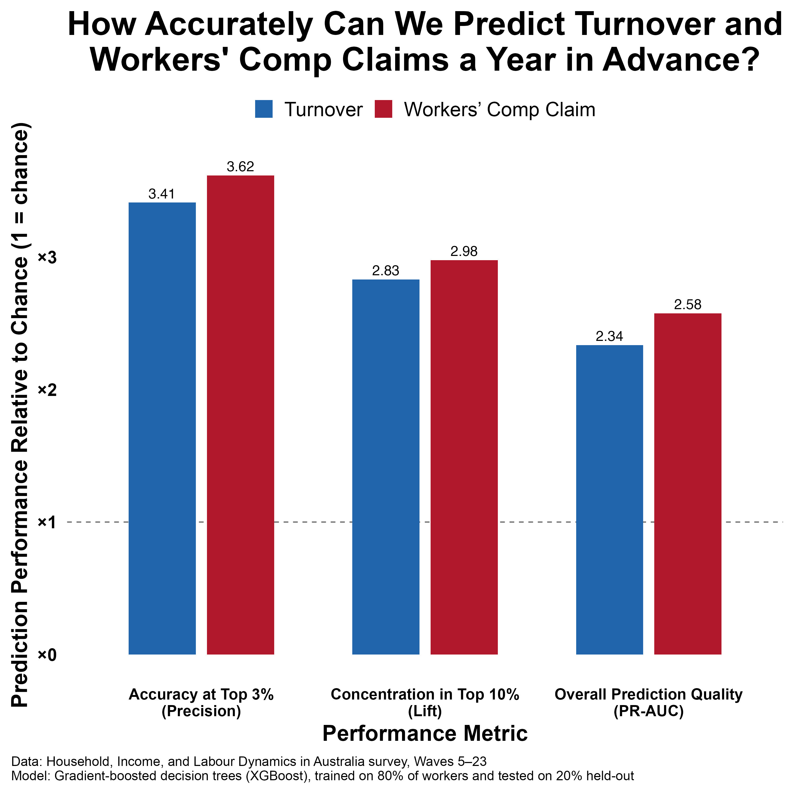

Turnover and workers' comp claims are costly for organisations and difficult experiences for employees. Knowing where risk is likely to emerge gives HR and Health & Safety teams a chance to proactively manage it.
But how accurately can these outcomes be predicted in advance?
To explore this, we trained a gradient-boosted decision tree model on data from the HILDA survey (2001–2023), which included 191,000 observations from nearly 25,000 workers.
We used predictors that mirror what most HR systems or engagement surveys capture including demographics, tenure, role characteristics, compensation, benefits, and job satisfaction. We trained on 80% of the workers and tested on the remaining 20%.
What we found:
- Triple the Accuracy for the Highest-Risk Individuals: The top 3% flagged were 3.5× more likely to actually leave or claim than a random 3%.
- Double the Overall Prediction Quality: Across the whole workforce, the model was over twice as good as chance at separating higher- from lower-risk employees.
- Concentrated Risk for Intervention: The top 10% flagged accounted for nearly 3× more cases than expected by chance.

Even a year in advance, a data-driven approach can provide a strong signal to help focus retention and safety efforts. The accuracy, while not perfect, is high enough to be useful, especially when a model like this is used to support the expertise of managers, organisational psychologists, and other specialists. It can help HR and Health & Safety teams develop proactive and targeted risk management efforts.
The exciting thing is that this was all with broad, national survey data. With higher-quality internal data from a single organisation, predictive accuracy could be even stronger. But the challenge is making sure the right data is being collected and shared between units and systems, which is often the hardest part of turning analytics into action.